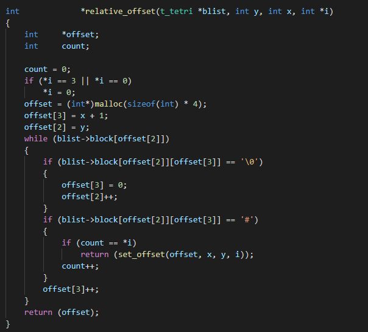
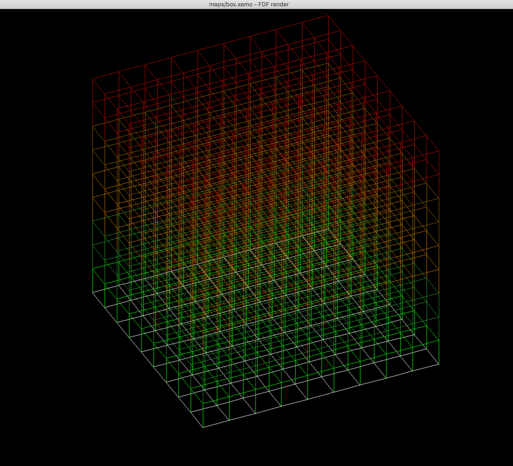

First real Hive project. Recode part of standard C library.
Despite having previous experience with coding (Piscine/Uni) I struggled with this quite hard. Made through the blackhole the very last day.
I didn't do the bonus part and memory allocation and linked list were hebrew to me and so I had to resort to external sources A LOT.
With use of Libft, this is first proper "own" project. It's a function that returns one line from given file.
Some stuff like static variables were difficult at first, but turned out I was overthingking a lot (this will be a trend btw).
Once I got the hang of the basic stuff needed the rest of the project built up quite organically.

First group project. Make an algorithm that fits Tetris pieces in smallest area possible.
I'm not very social person but I had a lot of fun with this one. Partially or mostly because my pair was easy to work with.
We didn't know how to approach this at first so we just did something and eventually we got few good ideas and it all added up until we got our final result.
Finally understood how to use linked lists and I've been using them very aggressively ever since.
I quess I made this. 2 days of scrabling around and then passed. There's not really anything noteworthy here.
Here's image of my current progress, I quess.
Graphics project that utilized in-house made "Minilibx" library. Idea was to take a file and render a peudo 3D wireframe.
Yeah, I was overthinking the complexity of MLX. Just use a function and be done with it. EZ PZ. Memed around for a week and the I got good rythm going on for the project.
There was a lot of mathematics involved which was fine because of my background. As mathematician I was numbers to be exact and not almost so my topmost priority was not to repocess values multiple times.
I had a roadmap on how I wanted to implement this which made my life easier when I wanted to implement some cool feature or just anything in general.
Cool ideas btw, 3D objects! Took me entire 4 hours to implement extra layers. Behind the scenes it was just adding one extra integer type value to check layer #. Had to change the input file structure though.
"I want this to be perfect. Almost perfect is not enough" -me to my evaluator
End up taking 4 weeks to do this because of how obsessed I was.
A bit of continuation to FDF. Idea was to generate seemingly endlessly zoomable images. Fractals are heavy to calculate so the aim was to optimize it as much as possible.
Felt a bit letdown after FDF. There wasn't that much interesting bonuses to go after. I made it look nice but that's about it.
My biggest pitfall was overusing math.h libary which took absolutely massive chuck of processing power. If I can do math, I'll do it myself.
Beginning of the end. Create a simple game like "Wolfenstein 3D". My current WIP project.
Alright, so I haven't really started yet but I have a plan. 3D eviroinment with cubic objects - tiles.
When you walk around -> from tile to another -> you'll build up aggro and eventually get and random encounter when you have enough aggro.
I'm and avid fan of Etrian Odyssey which is 1st person dungeon crawler so that's inspiring the idea.
This project (Yea, no kidding). Not my favourite project. Let this be done so I can do my actual preferred projects like Wolf.
Log in as root, install needed packages and add non-root user to sudoers file and log off from root.
-su -> apt install sudo vim ufw fail2ban portsentry apache2 mailutils -y
-sudo apt-get update && sudo apt-get upgrade
-sudo adduser alexwern sudo
-exit
4.2G partition
-separate /home partition
-sudo cfdisk
-d to delete n to create new t to chaange ID
-w to save changes
IP address
-Host Network manager
-tamper with values
-port forward lo to enp0s3
-/etc/network/
-vim interfaces
->Discord
Default SSH port
-vim /etc/ssh/sshd_config
-Locate "#port 22" remove comment and change it to whatever (ex 42 or 69)
-password off
-pubkey on
-service sshd restart
Firewall stuff
-sudo ufw status verbose to see current status
-sudo ufw enable to enable firewall
-sudo ufw allow XXX
-80/tcp to enable HTTP
-54269/tcp to enable SSH
-443/tcp to enable HTTPS
-sudo ufw default allow outgoing
-sudo ufw default deny incoming
Disable redundant services
-sudo systemctl list-unit-files | grep enabled
-sudo systemctl disable XXXX
Crontab
-sudo apt-get XXXX -y >> /var/log/update_script.log
-DIFF into new file
-Check diff and make decicions based on that
-chown root
-chmod 755
Rando links